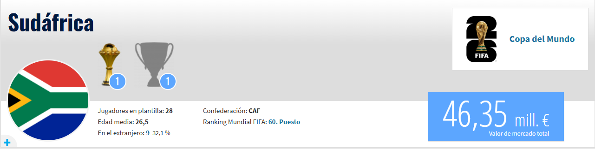

Sudáfrica vive un renacimiento futbolístico que ha ilusionado a todo el continente africano, logrando su clasificación al Mundial 2026 tras liderar con puño de hierro su grupo en las eliminatorias de la CAF. Los "Bafana Bafana" han dejado atrás años de irregularidad para consolidar un bloque basado en la cohesión de jugadores que se conocen a la perfección, muchos de ellos provenientes del exitoso Mamelodi Sundowns. El equipo actual combina el desequilibrio y la visión de Percy Tau, un atacante capaz de inventar jugadas en espacios reducidos, con la figura heroica de su portero y capitán Ronwen Williams, cuya capacidad para detener penales y liderar desde el fondo fue vital para su clasificación. Históricamente, Sudáfrica evoca la potencia de Benni McCarthy, el único sudafricano en ganar la Champions League y máximo anotador de la selección, así como la elegancia defensiva y el liderazgo social de Lucas Radebe, quien no solo fue un ídolo en el Leeds United, sino un símbolo de unidad para su nación en la era post-apartheid.